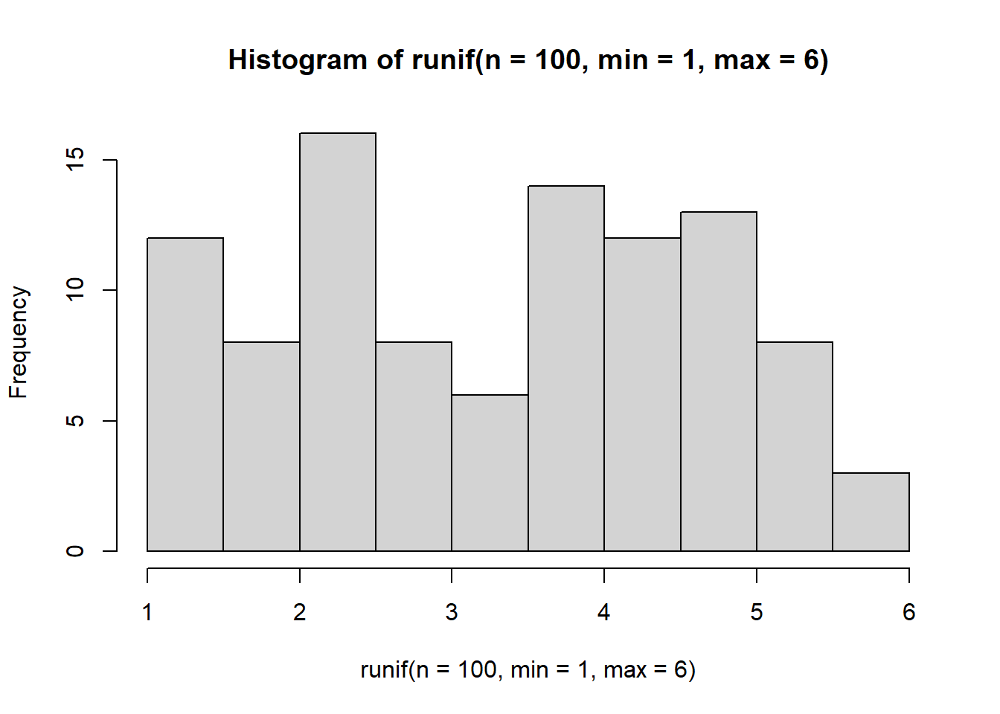
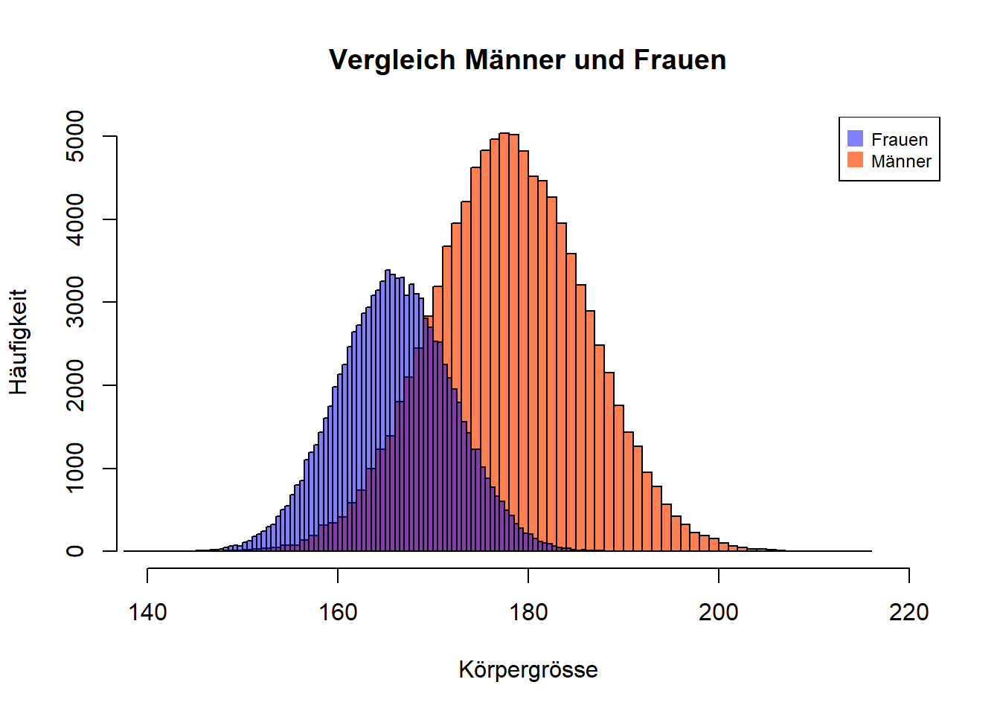

v.bild[5][1] 3Daten generieren und auswählen
In der kommenden Woche lernen Sie zwei neue Aspekte der Arbeit mit R kennen und üben diese: Zugreifen auf einzelne Elemente und Teilen von Datenobjekten (Indizieren und Subsetting). Dafür nutzen Sie das data.frame-Objekt, das Sie letzte Woche erstellt haben.
Die Lernziele:
In R normalverteilte Zufallsvariablen generieren.
Die Logik des Stichprobenfehlers mit R nachvollziehen und erklären.
Auf verschiedene Arten auf einzelne Elemente eines Objekts zugreifen.
Attribute von Objekten abfragen.
rnorm()). Alle Vektoren repräsentieren Körpergrössen. Schauen Sie sich je den Output der summary-Funktion (Funktion summary()) an und berechnen Sie den Standardfehler. Was stellen Sie fest?Indizieren und Subsetting von Elementen können wir potenziell auf alle Objekte anwenden. Da wir letzte Woche den Objekttyp data.frame kennengelernt haben, werden wir das Zugreifen auf Elemente an diesem Objekttyp ausprobieren. Untenstehend werden zwei Beispieldatensätze erstellt, um indizieren und subsetting daran zu erläutern.
v.bild[5][1] 3Greifen wir auf das fünfte Element eines Vektors von 11 bis 20 zu, ist das “Ergebnis” 15:
v.bsp <- 11:20
v.bsp[5][1] 15Dasselbe Prinzip können wir nun auch auf data.frames (oder Matrizen) anwenden. Dort greifen wir aber auf ein zweidimensionales Objekt zu, deshalb müssen wir zwei Angaben nennen, um nicht die ganze jeweilige Spalte oder Zeile zu erhalten (vor dem Komma Zeilen, nach dem Komma Spalten). Das funktioniert nicht nur mit numerischen Angaben, sondern auch mit den Spalten- und Zeilennamen!
d.pol[1, ] v.id v.pol v.strom v.wasser v.eink v.wohn pol.r
1 1 6.858178 8761.065 274.411 83096.5 stadt 7d.pol[, 1] [1] 1 2 3 4 5 6 7 8 9 10 11 12 13 14 15 16 17 18
[19] 19 20 21 22 23 24 25 26 27 28 29 30 31 32 33 34 35 36
[37] 37 38 39 40 41 42 43 44 45 46 47 48 49 50 51 52 53 54
[55] 55 56 57 58 59 60 61 62 63 64 65 66 67 68 69 70 71 72
[73] 73 74 75 76 77 78 79 80 81 82 83 84 85 86 87 88 89 90
[91] 91 92 93 94 95 96 97 98 99 100d.pol[1, 2][1] 6.858178d.pol[2, 1][1] 2d.pol[1, ] v.id v.pol v.strom v.wasser v.eink v.wohn pol.r
1 1 6.858178 8761.065 274.411 83096.5 stadt 7d.pol[, 4] [1] 274.4110 241.7775 326.3211 310.3763 314.2702 350.3932 268.0168 264.0539
[9] 297.6999 317.6168 351.1525 267.1193 280.0993 295.3505 337.4947 307.6708
[17] 311.5468 298.3147 263.9045 298.5639 304.8696 254.1487 312.4287 285.0872
[25] 282.0921 327.0039 380.2324 305.0408 277.2102 301.7297 249.9961 345.0464
[33] 282.5349 308.5545 343.4980 271.7065 274.5763 305.0346 310.3005 318.5596
[41] 314.2663 239.1883 317.1940 280.4001 299.0461 256.4735 211.1221 240.9777
[49] 307.4078 281.9977 355.3474 309.7499 294.9521 329.9515 333.9452 269.3651
[57] 314.6559 289.1085 327.7963 266.4120 328.4214 314.8545 348.0398 278.2805
[65] 258.5743 325.6877 310.7701 252.9769 288.6835 241.7988 309.3720 268.3209
[73] 309.0893 296.0106 242.7612 256.7288 285.3593 287.6175 307.5064 245.1934
[81] 265.7846 310.5781 308.5539 289.6226 305.3891 262.1530 281.2171 298.7774
[89] 306.9437 302.7676 328.5141 281.7794 310.2943 308.8692 355.6892 263.0794
[97] 286.3673 310.0192 279.2104 296.4635d.pol[, "v.pol"] [1] 6.858178 8.781292 6.410277 7.157494 7.063976 8.014528 6.054806 2.724811
[9] 8.446916 4.149847 7.266608 1.436702 4.737500 8.641045 5.497199 1.106565
[17] 6.299009 7.275636 7.665345 5.211392 4.799965 7.541168 1.927661 9.773234
[25] 1.772751 4.477595 2.437056 1.027699 8.696698 6.795284 6.957827 8.284727
[33] 5.401432 1.739023 3.916496 1.289937 1.230082 5.408281 7.823461 4.612027
[41] 2.167003 2.511177 3.658053 3.474678 2.306367 1.412265 7.106262 3.323616
[49] 8.588742 5.921951 7.397460 8.312474 7.816915 6.263460 2.936669 3.428010
[57] 8.190175 7.714066 2.861060 1.797547 3.770794 8.601440 8.587986 3.151170
[65] 8.993218 1.411476 5.892800 2.202390 7.483351 5.837272 4.477763 5.775017
[73] 7.528131 6.684681 4.394614 4.141754 8.557511 8.702226 1.471985 6.327729
[81] 1.752227 6.224701 1.195534 4.897016 3.691892 4.772345 1.782425 5.437449
[89] 2.946041 1.023687 9.411699 5.873850 7.517595 5.199641 9.583392 1.881900
[97] 3.470339 2.304589 3.648037 6.212490Die Logik können wir erweitern und mit bereits bekannten Funktionen kombinieren:
d.pol[1:10, c(3, 4)] v.strom v.wasser
1 8761.065 274.4110
2 7616.661 241.7775
3 6888.447 326.3211
4 7819.990 310.3763
5 7680.017 314.2702
6 6728.655 350.3932
7 8058.631 268.0168
8 8176.877 264.0539
9 7422.392 297.6999
10 7790.929 317.6168colnames(d.pol)[1] "v.id" "v.pol" "v.strom" "v.wasser" "v.eink" "v.wohn" "pol.r" d.pol[c(4, 5), c("v.pol", "v.eink")] v.pol v.eink
4 7.157494 78218.58
5 7.063976 103978.87mean(d.pol$v.wasser)[1] 295.6328cor(d.pol$v.wasser, d.pol$v.strom)[1] -0.0597614Die beiden Möglichkeiten können wir kombinieren, um zum Beispiel den fünften Fall der Wasser-Variable im data-frame-Objekt d.pol aufzurufen:
d.pol$v.wasser[5][1] 314.2702Eine Positionsangabe ist ausreichend, weil die Variable eindimensional ist.
# Welche Fälle stammen aus dem Tessin?
which(d.mig$v.reg == "Tessin")[1] 13 66 74 100# Welche Fälle stammen aus dem Tessin und sind Frauen?
which(d.mig$v.reg == "Tessin" & d.mig$v.geschl == 2)[1] 66 74 100# Welche Fälle im Datensatz sind Frauen oder Ausländer*innen
# und aus der tiefsten Einkommensklasse...
which((d.mig$v.geschl == 1 | d.mig$v.ch == 0) &
d.mig$v.eink.kl == 1)[1] 34 60 87R gibt die Position im Vektor aus. Damit wir den Inhalt an dieser Position sehen, müssen wir indizieren. Dadurch ist es möglich einen Teildatensatz mit Personen, die ein überdurchschnittliches Einkommen aufweisen, zu erstellen (subsetting):
d.mig.t1 <- d.mig[which(d.mig$v.eink.kl > mean(d.mig$v.eink.kl)), ]
d.mig.t2 <- d.mig[d.mig$v.eink.kl > mean(d.mig$v.eink.kl), ] # Kurzversion
# noch mit der Auswahl von bestimmten Variablen
d.mig.t3 <- d.mig[
d.mig$v.eink.kl > mean(d.mig$v.eink.kl),
1:3
]Erstellen Sie einen Datensatz mit sozialwissenschaftlich interessanten Inhalten (Funktion data.frame()). Der Datensatz soll aus fünf Variablen bestehen und 100 Fälle umfassen. Nutzen Sie dazu die verschiedenen Funktionen, die wir bisher kennengelernt haben (c(), rep(), seq(), und Zufallsvariablen, …). Die fünfte Variablen soll dem Datenformat character entsprechen.
Wenden Sie die Funktionen dim(), names(), str(), class(), summary() und typeof() auf Ihren Datensatz an. Welche Informationen erhalten Sie? Welche Outputs sind sinnvoll, welche weniger sinnvoll?
Wählen Sie aus Ihrem Datensatz die Fälle 20 bis 30 sowie die zweite und dritte Variable aus (ohne einen Teildatensatz zu erstellen). Nutzen Sie zwei verschiedene Varianten!
Suchen Sie Fälle in Ihrem Datensatz unter der Verwendung von mindestens zwei Variablen. Diese Fälle sollen “spezielle” oder “interessante” Beispiele repräsentieren. Begründen Sie Ihre Wahl! Falls Sie keine solche Fälle in Ihrem Datensatz finden, fügen Sie solche hinzu (indizieren Sie und weisen Sie einen neuen Wert zu).
Definieren Sie eine logische Bedingung, die Ihnen erlaubt, Ihren Datensatz anhand der Character-Variablen in zwei Gruppen zu teilen. Dies ist eine erste Variante um Teildatensätze zu erstellen (d.xy.t.1 und d.xy.t.2). Teilen Sie dann als zweite Variante Ihren Datensatz anhand einer anderen logischen Bedingung in zwei andere Gruppen (d.xy.t.3 und d.xy.t.4). Nutzen Sie hierfür, wenn möglich, zwei numerische Variablen.
Berechnen Sie den Mittelwert einer Variablen für alle Teildatensätze. Was wären (kurze) sozialwissenschaftliche Interpretationen Ihrer Ergebnisse?
Wählen Sie einen Teildatensatz aus und berechnen Sie den Mittelwert einer Variable für einen Teil der Fälle, ohne jedoch zuerst einen Teildatensatz als Objekt zu speichern.
Reflexion (bitte betiteln Sie diesen Abschnitt auch mit “Reflexion” in Ihrem Markdown-Dokument!)
Bitte reflektieren Sie und halten stichpunktartig fest:
Was ist Ihnen klar geworden?
Wo sind Sie noch unsicher? Was hat noch nicht geklappt?
rm(list = ls()) # Workspace loeschen
options(scipen = 999) # schaltet wissenschaftliche Schreibweise ausUnsere Variablen repräsentieren die Körpergrösse von Frauen und Männern (Sie haben wahrscheinlich mit einer Variable geübt). Sie sind normalverteilt – das heisst, die Werte gruppieren sich um den Mittelwert von 170cm. Kleine und grosse Werte treten mit zunehmender Entfernung vom Mittelwert immer seltener auf. Normalverteilungen (Funktion rnorm()) definieren sich über die beiden expliziten Parameter des arithmetischen Mittels und der Standardabweichung. Je grösser die Fallzahl, desto näher liegt das arithmetische Mittel der gezogenen Elemente (und auch die Standardabweichung) an den expliziten Parametern. Zudem sehen wir bei grossen Fallzahlen die typische Glockenform.
…mit je 10 Fällen (um sich die Verteilung besser vorstellen zu können, ist auch ein Histogramm angefügt, Grafiken vertiefen wir in Woche 8):
m.mean <- 178 # Quelle m.mean und w.mean: https://dam-api.bfs.admin.ch/hub/api/dam/assets/30305714/master, aufgerufen am 01.10.25
m.sd <- 8 # Fantasiezahlen für sd
w.mean <- 166
w.sd <- 6
v.1.m <- rnorm(n = 10, mean = m.mean, sd = m.sd)
summary(v.1.m) Min. 1st Qu. Median Mean 3rd Qu. Max.
164.1 173.5 177.7 176.9 181.3 189.1 hist(v.1.m)
v.1.w <- rnorm(n = 10, mean = w.mean, sd = w.sd)
summary(v.1.w) Min. 1st Qu. Median Mean 3rd Qu. Max.
148.2 160.6 164.6 163.9 168.9 174.3 hist(v.1.w)
Der Schwerpunkt der Körpergrösse der Frauen liegt anders (aufgrund des unterschiedlichen Durchschnittswerts). Zudem sind die Verteilungen unterschiedlich breit, was aber mit 10 Fällen noch nicht gut erkennbar ist (aufgrund der unterschiedlichen Standardabweichungen). Untenstehend wird erstmal nur mit der Verteilung der Frauen weiter gearbeitet. Die Verteilung der Männer wird abschliessend nochmals aufgegriffen, um zu zeigen, inwiefern sich die beiden unterscheiden.
…mit 1000 Fällen:
v.2.w <- rnorm(n = 1000, mean = w.mean, sd = w.sd)
summary(v.2.w) Min. 1st Qu. Median Mean 3rd Qu. Max.
144.8 161.9 165.8 166.0 170.1 183.9 hist(v.2.w, breaks = 100)
…mit 100’000 Fällen:
v.3.w <- rnorm(n = 100000, mean = w.mean, sd = w.sd)
summary(v.3.w) Min. 1st Qu. Median Mean 3rd Qu. Max.
137.9 161.9 166.0 166.0 170.0 190.6 hist(v.3.w, breaks = 100)
Binomialverteilung (auch Bernoulli-Verteilung)
rbinom() erstellt zufällige binomiale Verteilungen, die für Zähldaten zu verwenden sind. Ein klassisches Beispiel sind Münzwürfe.
hist(rbinom(n = 100, size = 1, prob = 0.5))
Uniforme Verteilung
Bei der Gleichverteilung hat jede Ausprägung dieselbe Auftrittswahrscheinlichkeit. Zum Beispiel ist die Wahrscheinlichkeit beim Würfeln (mit einem fairen Würfel) für jede Augenzahl 1/6:
hist(runif(n = 100, min = 1, max = 6))
Exkurs: Grafische Darstellung von Verteilungen (Vertiefung folgt in Woche 8)
Wir können die Histogramme noch weiter ausarbeiten: Um sie besser vergleichen zu können, sollen zwei Histogramme dieselbe “Spannbreite” in der x-Achsen haben, jeweils 100 Balken aufweisen, aber unterschiedlich eingefärbt sein. Dazu verwenden wir die Argumente break =, womit wir die Anzahl der Balken im Histogramm bestimmen können, xlim =, das die “Spannbreite” der x-Achse definiert und col für die Farbgebung. Zudem fügen wir mit xlab und ylab sinnvolle Achsenbeschriftungen sowie einen Titel (main) hinzu. In der folgenden Abbildung sehen Sie den Unterschied aufgrund der verschiedenen Parametern gut:
v.3.m <- rnorm(n = 100000, mean = m.mean, sd = m.sd)
hist(v.3.m,
col = "coral",
main = "Vergleich Männer und Frauen",
xlab = "Körpergrösse",
ylab = "Häufigkeit",
breaks = 100,
xlim = c(140, 220))
# zweites Histogramm dazu - das funktioniert nur bei knitten!
# leicht transparente Farbe, damit das zweite Histogramm das erste nicht verdeckt
col2rgb("blue") # Werte unten einsetzen [,1]
red 0
green 0
blue 255new.color <- rgb(red = 0, green = 0, blue = 255, alpha = 255/2,
maxColorValue = 255) # RGB Spannbreite, muss definiert sein
hist(v.3.w,
breaks = 100,
col = new.color,
add = T)
legend("topright",
legend = c("Frauen", "Männer"),
col = c(new.color, "coral"),
cex = 0.75,
pch = 15,
pt.cex = 1.5)
Zurück zu Aufgabe 1:
rbind(summary(v.1.w), summary(v.2.w), summary(v.3.w)) Min. 1st Qu. Median Mean 3rd Qu. Max.
[1,] 148.1612 160.5574 164.5548 163.8554 168.8514 174.2979
[2,] 144.8442 161.8696 165.8214 165.9573 170.0504 183.9444
[3,] 137.9036 161.9062 165.9607 165.9766 170.0411 190.5631Wir sehen in der obenstehenden Tabelle, dass der Durchschnitt (Mean) deutlich variiert. Wir haben unterschiedlich viele Zahlen aus der theoretischen Normalverteilung mit den Parametern Mittelwert (166) und Standardabweichung (6) gezogen. In der Tendenz kommt der empirische Mittelwert (in der obenstehenden Tabelle) mit zunehmender Fallzahl näher am theoretischen Mittelwert (Parameter der Verteilung) zuliegen.
Den “Stichprobenfehler” gibt die Streuung von Mittelwerten (oder auch Anteilswerten) um den Mittelwert an (es handelt sich um eine Standardabweichung der Stichprobenkennwerte, wobei Stichprobenfehler ein eher umgangssprachlicher Begriff ist). Die “klassische” Standardabweichung hingegen ist das Mass für die Streuung der einzelnen Werte um den Mittelwert. Der Standardfehler wird zum Beispiel für die Berechnung von t-Test-Statistiken gebraucht. Die Formel ist:
\({\sigma}\bar{_x} = \frac{\sigma}{\sqrt{n}}\)
Wir berechnen das:
w.sd / sqrt(10) # wir nehmen hier als GG die theoretische Normalverteilung mit den entsprechenden Parametern[1] 1.897367w.sd / sqrt(1000)[1] 0.1897367w.sd / sqrt(100000)[1] 0.01897367Wir sehen, dass der Stichprobenfehler mit zunehmender Stichprobengrösse kleiner wird. In der Praxis schätzt man jedoch die Standardabweichung in der Grundgesamtheit, da im Normalfall keine theoretischen Werte gegeben sind.
Zwei Beispiele:
# id zur Identifikation der Fälle (z.B. Personen)
v.id <- seq(1, 100)
# politische Einstellung der Person
# Spektrum von 1 = links bis 10 = rechts
v.pol <- runif(100, 1, 10)
# Stromverbrauch der Person pro Jahr in Kwh
v.strom <- rnorm(100, 7520.17, 500)
# Wasserbrauch der Person pro Tag in Liter
v.wasser <- rnorm(100, 296, 30)
# Einkommen der Person pro Jahr
v.eink <- rnorm(100, 86645, 15000)
# Wohngegend der Personen
v.wohn <- c(rep('stadt', 43),
rep('aglo', 27),
rep('land', 30))
d.pol <- data.frame(v.id, v.pol, v.strom, v.wasser, v.eink, v.wohn,
row.names = v.id)
# erste fünf Fälle anzeigen
head(d.pol) v.id v.pol v.strom v.wasser v.eink v.wohn
1 1 5.939836 7273.952 322.1588 86841.88 stadt
2 2 5.937701 7477.618 282.2236 83125.50 stadt
3 3 7.995834 7682.792 323.4618 88150.42 stadt
4 4 7.738474 8293.720 316.3470 99718.47 stadt
5 5 1.526352 7124.316 262.8376 82560.64 stadt
6 6 6.598763 7626.491 283.5128 70751.16 stadt# v.pol runden (-> neue Variable)
d.pol$pol.r <- round(d.pol$v.pol)
head(d.pol) v.id v.pol v.strom v.wasser v.eink v.wohn pol.r
1 1 5.939836 7273.952 322.1588 86841.88 stadt 6
2 2 5.937701 7477.618 282.2236 83125.50 stadt 6
3 3 7.995834 7682.792 323.4618 88150.42 stadt 8
4 4 7.738474 8293.720 316.3470 99718.47 stadt 8
5 5 1.526352 7124.316 262.8376 82560.64 stadt 2
6 6 6.598763 7626.491 283.5128 70751.16 stadt 7# Geschlecht: 1 männlich, 2 weiblich, 3 divers
v.geschl <- sample(c(rep(1, 48), # mit sample() durchmischt R die Zahlen zufällig
rep(2, 44),
rep(3, 3),
rep(NA, 5)))
# Bildung: 1 keine, 2 Grundschule, 3 Sekundarstufe, 4 Tertiärausbildung
v.bild <- sample(c(rep(1, 4),
rep(2, 18),
rep(3, 36),
rep(4, 39),
rep(NA, 3)))
# CH-Staatsbürgerschaft: 1 Ja, 0 Nein
v.ch <- sample(c(rep(1, 60), rep(0, 40)))
# Einkommen der Person pro Jahr
v.eink <- rnorm(100, 86645, 15000)
v.alter <- runif(100, 18, 65)
v.reg <- sample(c(rep("Tessin", 4),
rep("Région Lemanique", 13),
rep("Espace Mittelland", 18),
rep("Nordwestschweiz", 9),
rep("Zürich", 26),
rep("Ostschweiz", 11),
rep("Zentralschweiz", 15),
rep(NA, 4)))
d.mig <- data.frame(v.geschl, v.bild, v.ch, v.eink, v.alter, v.reg)
head(d.mig, n = 10) # die ersten 10 Fälle anzeigen v.geschl v.bild v.ch v.eink v.alter v.reg
1 1 2 0 106969.10 28.50938 Zentralschweiz
2 2 3 0 105938.00 37.67813 Zürich
3 1 4 1 109109.85 50.93806 Zürich
4 1 3 0 88772.42 35.43473 Nordwestschweiz
5 1 4 1 91351.58 45.35539 Zürich
6 1 3 1 77891.67 24.89165 Ostschweiz
7 3 NA 1 65701.86 19.09298 Nordwestschweiz
8 NA 4 0 90768.64 48.36445 Région Lemanique
9 1 4 1 85996.94 41.83259 Région Lemanique
10 3 2 1 75032.47 33.86338 Zentralschweizdim(d.mig)[1] 100 6Die Funktion dim() gibt die Anzahl Dimensionen des Datensatzes aus – das heisst die Zeilen- und Spaltenzahl, was der Anzahl Fällen und Variablen im Datensatz entspricht. Auf diese Dimensionen können Sie mittels [] zugreifen.
d.mig[c(2, 3), c(2, 4)] v.bild v.eink
2 3 105938.0
3 4 109109.9d.mig[101, 6] # liegt ausserhalb der vorhandenen Dimensionen[1] NAnames(d.mig)[1] "v.geschl" "v.bild" "v.ch" "v.eink" "v.alter" "v.reg" Die Funktion names() gibt die Namen der Spalten aus, also die Variablennamen. Alternativ können wir auch die Funktion colnames() verwenden, die sich spezifisch nur auf die Spaltennamen bezieht (Pendant zu rownames()). Diese können wir dann auch verändern:
colnames(d.mig)[4] <- "v.ch.neu"
colnames(d.mig)[1] "v.geschl" "v.bild" "v.ch" "v.ch.neu" "v.alter" "v.reg" Die Funktion names() gibt die Namen der Zeilen bei data.frames nicht aus. Diese könnten wir mit rownames() aufrufen und auch verändern…
row.names(d.mig) [1] "1" "2" "3" "4" "5" "6" "7" "8" "9" "10" "11" "12"
[13] "13" "14" "15" "16" "17" "18" "19" "20" "21" "22" "23" "24"
[25] "25" "26" "27" "28" "29" "30" "31" "32" "33" "34" "35" "36"
[37] "37" "38" "39" "40" "41" "42" "43" "44" "45" "46" "47" "48"
[49] "49" "50" "51" "52" "53" "54" "55" "56" "57" "58" "59" "60"
[61] "61" "62" "63" "64" "65" "66" "67" "68" "69" "70" "71" "72"
[73] "73" "74" "75" "76" "77" "78" "79" "80" "81" "82" "83" "84"
[85] "85" "86" "87" "88" "89" "90" "91" "92" "93" "94" "95" "96"
[97] "97" "98" "99" "100"row.names(d.mig)[3] <- "Fall drei"
row.names(d.mig) [1] "1" "2" "Fall drei" "4" "5" "6"
[7] "7" "8" "9" "10" "11" "12"
[13] "13" "14" "15" "16" "17" "18"
[19] "19" "20" "21" "22" "23" "24"
[25] "25" "26" "27" "28" "29" "30"
[31] "31" "32" "33" "34" "35" "36"
[37] "37" "38" "39" "40" "41" "42"
[43] "43" "44" "45" "46" "47" "48"
[49] "49" "50" "51" "52" "53" "54"
[55] "55" "56" "57" "58" "59" "60"
[61] "61" "62" "63" "64" "65" "66"
[67] "67" "68" "69" "70" "71" "72"
[73] "73" "74" "75" "76" "77" "78"
[79] "79" "80" "81" "82" "83" "84"
[85] "85" "86" "87" "88" "89" "90"
[91] "91" "92" "93" "94" "95" "96"
[97] "97" "98" "99" "100" str(d.mig)'data.frame': 100 obs. of 6 variables:
$ v.geschl: num 1 2 1 1 1 1 3 NA 1 3 ...
$ v.bild : num 2 3 4 3 4 3 NA 4 4 2 ...
$ v.ch : num 0 0 1 0 1 1 1 0 1 1 ...
$ v.ch.neu: num 106969 105938 109110 88772 91352 ...
$ v.alter : num 28.5 37.7 50.9 35.4 45.4 ...
$ v.reg : chr "Zentralschweiz" "Zürich" "Zürich" "Nordwestschweiz" ...Die Funktion str() gibt die Struktur des Datensatzes und die enthaltenen Elemente (hier Variablen des Datensatzes) aus. Machen die Datenarten Sinn? Nein, denn die Durchschnitt von v.geschl, v.bild, v.eink.kl und v.ch zu berechnen machen keinen Sinn! Wir müssen dringend umkodieren (wir nutzen erstmal as.character(), wir werden im Verlauf des Seminars aber noch eine weitere Möglichkeit kennenlernen):
d.mig$v.geschl <- as.character(d.mig$v.geschl)
d.mig$v.bild <- as.character(d.mig$v.bild)
d.mig$v.ch <- as.character(d.mig$v.ch)Mittels $-Operator können Sie darauf zugreifen. Sie sehen anhand dieser Übersicht rasch, ob eine Umwandlung numerischer in kategoriale Datentypen (oder umgekehrt) notwendig ist.
class(d.mig)[1] "data.frame"Die Funktion class() beschreibt die Klasse des Objektes, die bestimmte Eigenschaften impliziert. Die Klasse “data.frame” impliziert zum Beispiel, dass es sich um ein zweidimensionales Objekt handelt, das unterschiedliche Datentypen vereinen kann.
Eine weitere nützliche Funktion ist summary(). Sie ermöglicht eine Übersicht über alle Variablen im Datensatz und bietet einen auf die Datenart angepassten Output:
summary(d.mig) v.geschl v.bild v.ch v.ch.neu
Length :100 Length :100 Length :100 Min. : 49066
N.unique : 3 N.unique : 4 N.unique : 2 1st Qu.: 73939
N.blank : 0 N.blank : 0 N.blank : 0 Median : 87411
Min.nchar: 1 Min.nchar: 1 Min.nchar: 1 Mean : 86560
Max.nchar: 1 Max.nchar: 1 Max.nchar: 1 3rd Qu.: 98566
NAs : 5 NAs : 3 Max. :115197
v.alter v.reg
Min. :18.35 Length :100
1st Qu.:28.48 N.unique : 7
Median :40.78 N.blank : 0
Mean :40.02 Min.nchar: 6
3rd Qu.:53.22 Max.nchar: 17
Max. :64.13 NAs : 4 Die Funktion gibt für jede Variable eine Zusammenfassung aus. Sie berechnet für jede metrische Variable den Mittelwert, sowie die Lage- und Streuungsmasse. Bei Character-Daten wird die Klasse ausgegeben. Zudem wird die Anzahl fehlender Werte (NA) angezeigt, falls welche vorhanden sind.
typeof(d.mig)[1] "list"Die Funktion typeof() beschreibt, wie R die Daten abspeichert, die im Objekt enthalten sind. Hier als Liste, d.h. “Bündel von Vektoren”. In der Praxis wird diese Funktion im Rahmen von Datenanalysen kaum verwendet.
# Variante 1: Indizieren (bevorzugt zu verwenden, da einfach)
d.mig[20:30, c(2, 3)]
# auch direkt mit colnames
d.mig[20:30, c("v.bild", "v.ch")]
# Variante 2: $-Operator und indizieren (in der Praxis zu komplex)
cbind(d.mig$v.bild[20:30], d.mig$v.ch[20:30])Es gibt noch weitere einfache(re) Varianten:
# mit subset() (in der Praxis zu komplex)
subset(d.mig,
subset = v.id > 19 & v.id < 31,
select = colnames(d.mig)[c(2, 3)]
)…oder mit dem Paket Tidyverse (siehe hier).
# install.packages("tidyverse")
library(tidyverse)── Attaching core tidyverse packages ──────────────────────── tidyverse 2.0.0 ──
✔ dplyr 1.2.1 ✔ readr 2.2.0
✔ forcats 1.0.1 ✔ stringr 1.6.0
✔ ggplot2 4.0.3 ✔ tibble 3.3.1
✔ lubridate 1.9.5 ✔ tidyr 1.3.2
✔ purrr 1.2.2
── Conflicts ────────────────────────────────────────── tidyverse_conflicts() ──
✖ dplyr::filter() masks stats::filter()
✖ dplyr::lag() masks stats::lag()
ℹ Use the conflicted package (<http://conflicted.r-lib.org/>) to force all conflicts to become errorsDie Funktion filter() bezieht sich auf Zeilen, select() auf Spalten. Mit dem Pipe-Operator %>% ist es möglich, mehrere Operation (wie durch eine Röhre, von oben nach unten) aneinander zu hängen:
d.mig %>%
filter(v.id %in% 20:30 ) %>%
select(v.bild, v.ch)Für eine Übersicht lassen wir uns erst eine Tabelle ausgeben und suchen danach nach den Fällen:
table(d.mig$v.geschl, useNA = "always")
1 2 3 <NA>
48 44 3 5 which(d.mig$v.geschl == "3")[1] 7 10 33Noch spezieller könnten diese Fälle sein, wenn sie zum Beispiel ein ausgeprägt hohes oder tiefes Bildungsniveau aufweisen:
which(d.mig$v.geschl == "3" & (d.mig$v.bild == "1" | d.mig$v.bild == "4"))[1] 33Da noch keine Fälle vorhanden sind, fügen wir beim ersten Fall mit Geschlechtsausprägung “3” ein besonders hohes Bildungsniveau hinzu und prüfen, ob nun ein Fall vorhanden ist, der beide Bedingungen erfüllt.
d.mig$v.bild[which(d.mig$v.geschl == "3")[1]] <- "4"
which(d.mig$v.geschl == "3" & (d.mig$v.bild == "1" | d.mig$v.bild == "4"))[1] 7 33# Subsets anhand kategorialer Variable
d.tdf.t.1 <- dat.tdf[which(dat.tdf$univ == "unilu"), ]
d.tdf.t.2.a <- dat.tdf[dat.tdf$univ == "unibas" |
dat.tdf$univ == "unibe" |
dat.tdf$univ == "unifr", ]
# kürzere Schreibweise
d.tdf.t.2.b <- dat.tdf[dat.tdf$univ %in% c("unibas", "unibe", "unifr"), ]
# oder noch kürzer (und einfacher, deshalb zu bevozugen!)
d.tdf.t.2.c <- dat.tdf[dat.tdf$univ != "unilu", ]
# Subsets anhand zwei numerischer Variablen
ausw <- which(dat.tdf$alter > 65 & dat.tdf$gr > 160)
d.tdf.t.3 <- dat.tdf[ausw,]
d.tdf.t.4 <- dat.tdf[-ausw,] # mit Negativ-Auswahlen lassen sich fehlerfrei Subsets erstellenwhich()
Beachten Sie, dass which() erst die Position der Elemente wiedergibt. Um einen Teildatensatz zu erstellen, müssen Sie noch mit Indizes arbeiten.
#
mean(d.tdf.t.1$alter) # Alter an Unilu: zufällig[1] 48.05678mean(d.tdf.t.2.c$alter) # Alter andere Universitäten: zufällig[1] 46.10299mean(d.tdf.t.3$alter) # sollte tendenziell höher liegen als in d.tdf.t.4, aber zwei Bedingungen[1] 71.11958mean(d.tdf.t.4$alter)[1] 41.80311 mean(dat.tdf$alter[dat.tdf$univ == "unilu"])[1] 48.05678